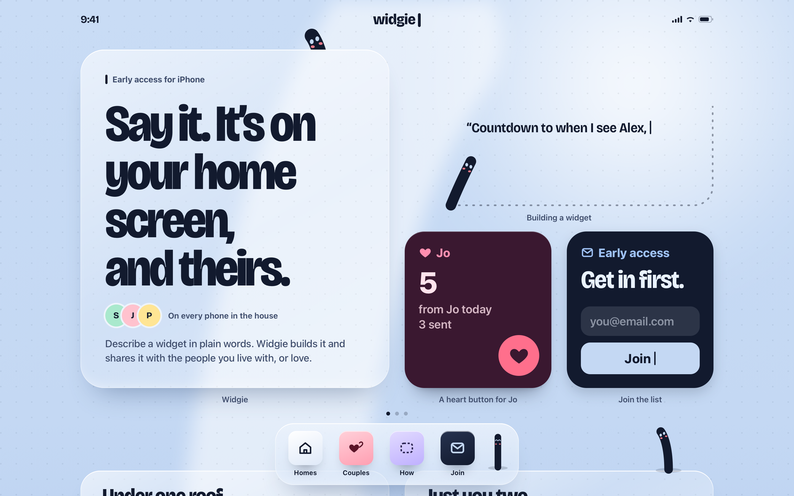
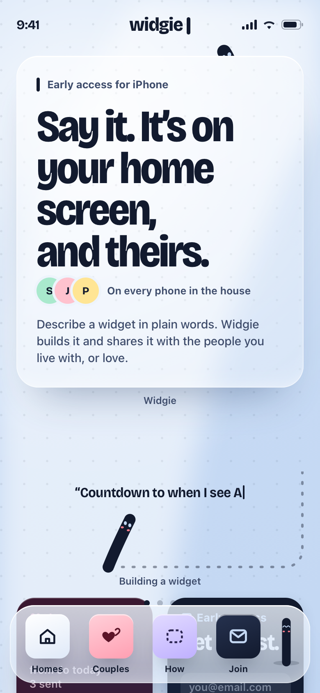
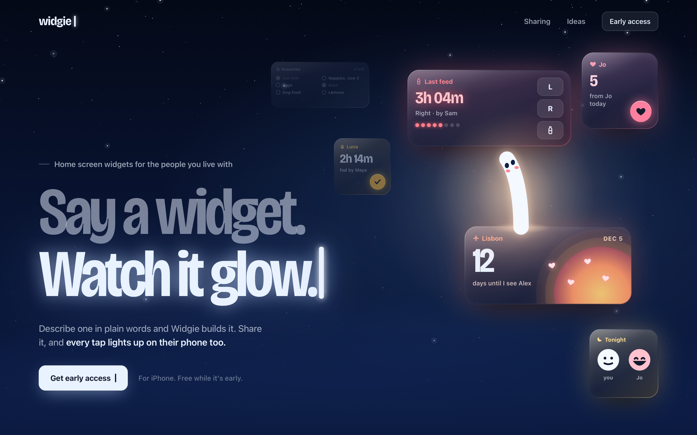
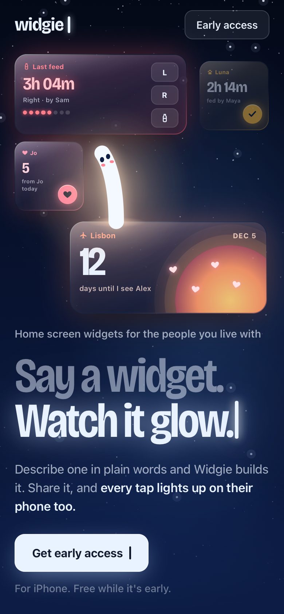
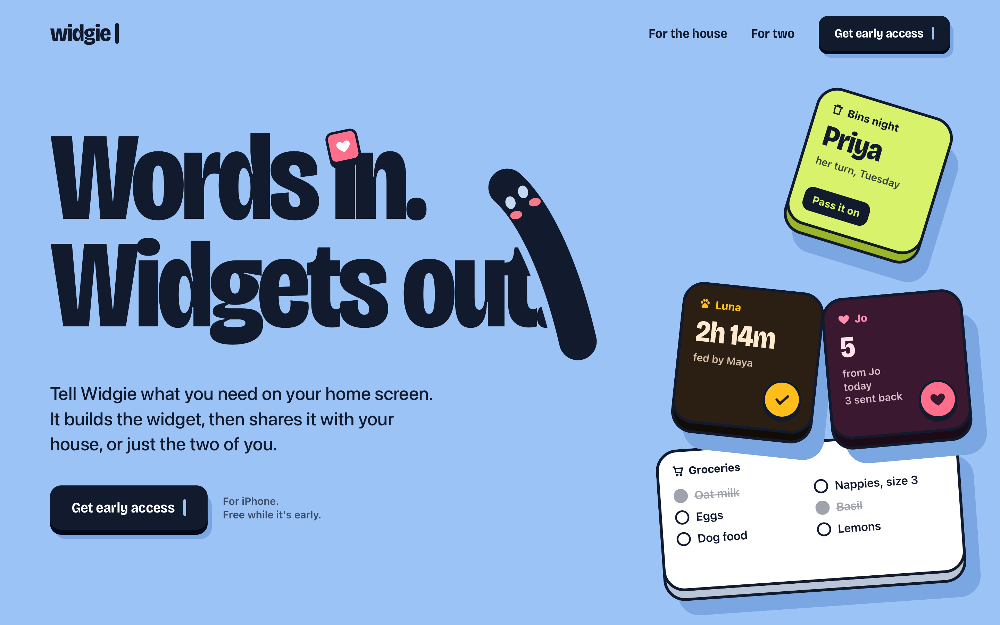
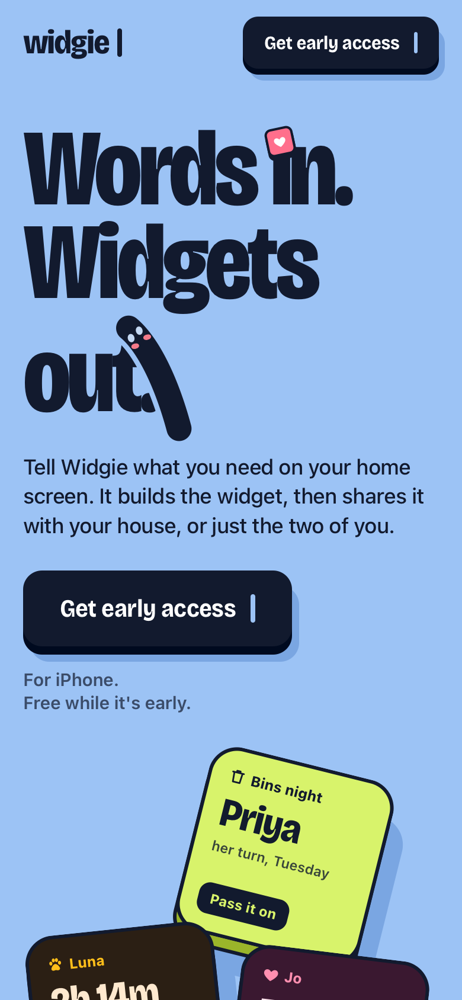

Each is a working page in docs/design/site-directions/. Desktop hero on the left, phone on the right.
Every section is a widget on one grid, labelled with the sentence that built it. A glass dock is the navigation, widgets jiggle on hover like edit mode, and the caret draws a widget live.


A cinematic night sky with glass widgets floating in depth, the caret as the only warm light. Tapping on one phone sends a streak of light to the other.


Bold color fields per section, widgets as chunky toy blocks with real thickness, and a big caret acting in every scene: leaning on words, carrying widgets, two carets leaning together for couples.

